http://www.savethevowels.org/talks
|
|
|
Will Styler - Semantics
The sign is causally linked to the signfied
Smoke indicates fire
Bleeding indicates injury
Will’s presence indicates crappy puns
A referential abstraction from the signified
Some hand gestures
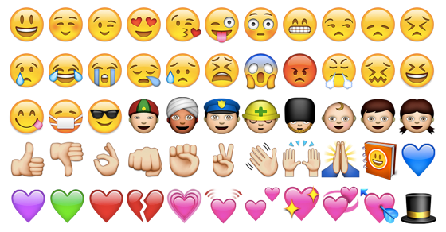
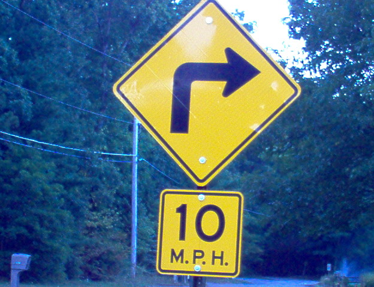
Referential only by agreement and widespread knowledge
Non-representational symbols (♄)

Non-iconic gestures
“Language - A System of Arbitrary Signs”
(from Finegan’s Language: Its Structure and Use)
|
|
|
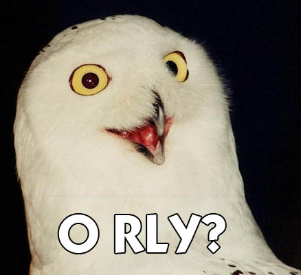
| ### Phonosemantics |
| The study of and search for non-arbitary meanings in speech sounds |
Iconicity
Analogy
Emergent groupings
Sounds really mean something
“Boom!”
“Pew pew pew!”
“Vroom vroom!”
Sound effects can be arbitrary, too!
Words which, when spoken, sound kind of like the things they represent
Gurgle
Woof
Snip
Whoosh
Tweet
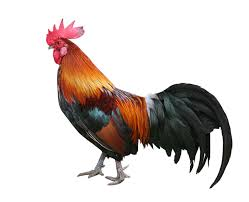
cock-a-doodle-doo (English)
kukko kiekuu (Finnish)
chicchirichí (Italian)
kuklooku (Urdu)
kukuriku (Hungarian)
Sourced from this awesome site
(So, different languages can’t even map sounds onto sounds uniformly)
Sometimes, the meaning comes from how you say it
The changes you can make to a pronunciation without changing the sequence of phonemes used.
Pitch of the voice
Duration of sounds/words
Voicing type (Breathy, Creaky)
Articulatory Setting
How could we use each of these to express iconic meaning?
… but meaning doesn’t have to come from iconicity at all!
Mental links between words which sound similar to each other in some way
“Meaning by association/spreading activation”
Most relevant to neologisms
Sometimes morphologically analyzable
Slytherin House
Severus Snape
Luna Lovegood
Voldemort
Altria (Formerly Philip Morris)
Academi (Formerly Blackwater)
Xfinity (Formerly Comcast)
VALIC (Spun off from AIG)
Elavil
Surmontil
Zoloft
Paxil
Wellbutrin
Re-Nutriv
Eternicils
Amplicils
Orchidee imperiale
Volkswagen Jetta
Febreze
Rogaine
Sharpens knives.
Lights up your house.
Tastes good.
I won’t be able to sew as well.
I’ll be unable to fill my bird feeders
What if there’s a fire?!
My nose is sore.
I dropped a glass.
It’s cold in here.
Blurge cola
Murple cola
Slize cola
“Them’s fighting words.”
“Maybe?”
“Thanks!”
“Them’s fighting words.”
“Maybe?”
“Thanks!”
“Frequently recurring sound-meaning pairings that are not clearly contrastive morphemes”
(definition from Bergen 2004)
gl- ‘light, vision’ glimmer, glisten, glitter, gleam, glow, glint, etc.
sn- ‘nose, mouth’ snore, snack, snout, snarl, snort, sniff, sneeze, etc.
sl - ‘pejorative’, slack, slouch, sludge, slime, slash, sloppy, slug, sluggard, slattern, slut, slang, sly, slither, slow, sloth, etc.
b_l - ‘expand abnormally’, blimp, bulge, bulk, balloon, blip
in- ‘inedible’, ‘inconceivable’, ‘indelible’, ‘incorrect’ is a morpheme, not a phonaestheme!
Complex systems and patterns which arise through simple interactions
At a white square, turn 90° right, flip the color of the square, move forward one unit
At a black square, turn 90° left, flip the color of the square, move forward one unit
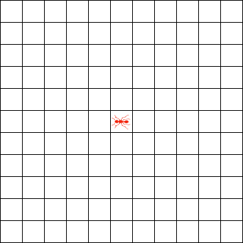
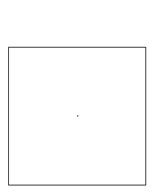 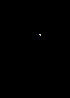
Bug -> Bugs
Tug -> Tugs
Rug -> Rugs
Wug -> ???
She cut her way through the jungle
She fought her way through the orcs
She bribed her way through the Senate
She resected her way through the abdominal cavity.
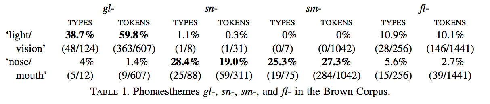
Bergen 2004 tested this by playing pairs of words which were:
Phonaesthemes (glitter:glow)
Similar sounding (druid:drip)
Similar meaning (cord:rope)
Similar sound/meaning, but not a group (crony:crook)
Baseline (frill:barn)
Reaction times were faster after a phonaestheme than after any other condition!
These results very clearly indicate that targets are responded to much more quickly when they share a phonaestheme with their prime than when they share form, meaning, both, or nothing with it.
So, they sure act real…
They can attract new members (drag, flag, lag, and sacke -> “sag”)
According to Keith McCune, most Indonesian language words have phonosemantic components.
Japanese has a rich system of phonosemantics (according to this guy)
Psuedoscience “sound meanings”
Actual cognitive phenomena
“Sound Symbolism and your Business Name”
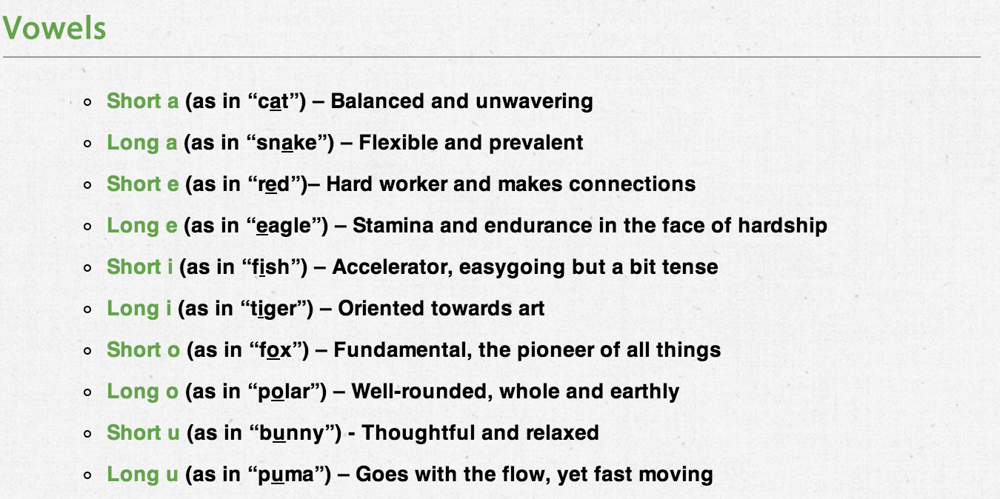
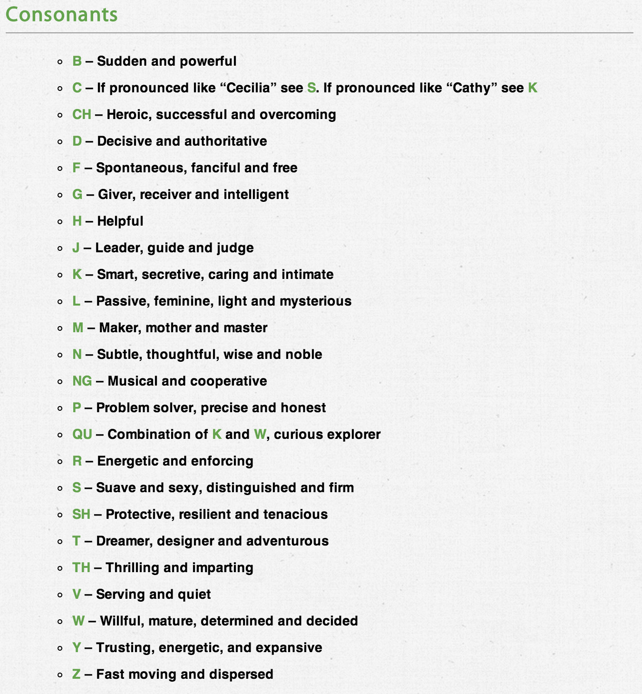
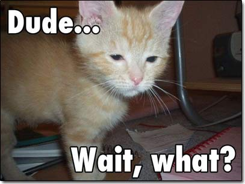
“BlackBerry” (Fast segments, nicely timed)
“Dasani” (CVCVCV, simple syllables)
“Swiffer” (Psuedo-phonestheme, onomatopoetic)
People pay Lexicon Branding lots of money to do this.
LOL
First observed on Tenerife (in Spanish) by Wolfgang Köhler in 1929. There, it was “Takete” vs. “Baluba”.
Repeated with US and Tamil Undergrads by V.S. Ramachandran and Edward Hubbard. 95% labeled them as expected.
2.5 year old kids show a Bouba/Kiki effect too!
Perhaps it’s mouth-shape related (high vowels vs. lower vowels? Lip rounding?)
Perhaps direct sensory integration.
Autistic Children do not show a Bouba/Kiki effect
But it’s clearly more complicated than the marketers think.
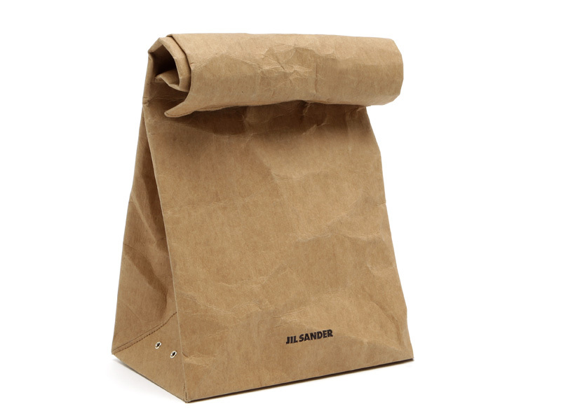
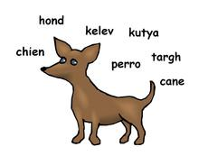
Onomatopoeia
Iconic Suprasegmentals
Similar sounding words can prime meanings
Spreading activation of meaning
Phonaesthemes are groups of semantically and phonologically related words.
Phonaesthemes emerge from lexical statistics
Words with phonaesthemes will inherit the meaning of the group.
One concept, many words
It’s most certainly not deterministic
These effects are the exception, not the rule.
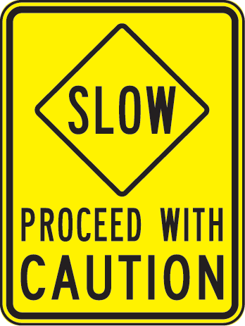
Will Styler - will@savethevowels.org
http://savethevowels.org/talks/